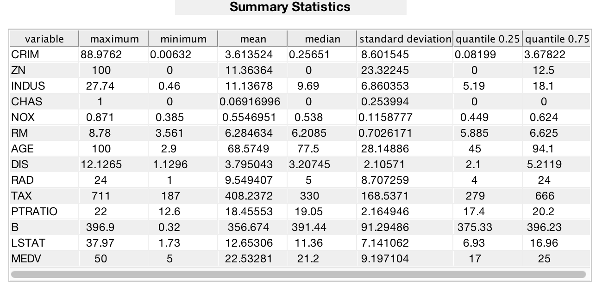

Contents
Data Read from archive
[housing_data,m,n] = download_dataset();
header = {'CRIM';'ZN';'INDUS';'CHAS';'NOX';'RM';'AGE';'DIS';'RAD';'TAX';'PTRATIO';'B';'LSTAT';'MEDV'};
header = char(header);
Summary Statistics
mx = max(housing_data)';
mi = min(housing_data)';
mu = mean(housing_data)';
sigma = std(housing_data)';
q = quantile(housing_data,[0.25,0.75]);
quantile_1 = q(1,:)';
quantile_2 = q(2,:)';
med = median(housing_data)';
mx = num2str(mx);
mi = num2str(mi);
mu = num2str(mu);
sigma = num2str(sigma);
quantile_1 = num2str(quantile_1);
quantile_2 = num2str(quantile_2);
med = num2str(med);
T = table(header,mx,mi,mu,med,sigma,quantile_1,quantile_2);
C = table2cell(T);
fig1 = figure;
t = uitable(fig1, 'Position', [10 10 630 275],'FontSize',12,'Data', nan(14,7))
t.Data = C;
t.ColumnName = {'variable','maximum', 'minimum',...
'mean','median','standard deviation', 'quantile 0.25','quantile 0.75'};
t.ColumnWidth = {'auto','auto','auto', 'auto', 'auto', 'auto', 'auto'};
t.RowName = [];
txt_title = uicontrol('Style', 'text', 'Position',...
[190 300 250 20], 'FontSize',14,'FontWeight','bold',...
'String', 'Summary Statistics');
set(fig1,'Position',[0, 0, 650, 315])
fig2 = figure
axes2 = axes('Parent',fig2);
box(axes2,'on');
set(gcf,'Position',[10 10 900 600])
boxplot(housing_data,'orientation','horizontal','Widths',0.3,'Colors',[0 0.5 0],'Symbol','k+')
set(gca,'XScale','log')
h = findobj(gca,'Tag','Box');
for j = 1:length(h)
patch(get(h(j),'XData'),get(h(j),'YData'),'y','FaceColor',[ 0.0 0.5 0.0],'FaceAlpha',.75);
lines = findobj(gcf, 'type', 'line', 'Tag', 'Median');
set(lines, 'Color',[0 0.5 0] );
set(findobj(gca,'type','line'),'linew',2)
end
title('Summary of Attributes')
xticks([0.01 0.02 0.05 0.1 0.2 0.5 1 2.5 5 10 25 50 100 250 500])
xticklabels({'0.01','0.02','0.05','0.1','0.2','0.5','1.0','2.5','5','10','25','50','100','250','500'})
set(axes2,'FontSize',16)
yticks([1 2 3 4 5 6 7 8 9 10 11 12 13 14 15])
yticklabels({'CRIM','ZN','INDUS','CHAS','NOX','RM','AGE','DIS','RAD','TAX','PTRATIO','B','LSTAT','MEDV','500'})
set(gca,'YDir','reverse')
xlabel('value')
for i = 1:14
Attribute = housing_data(:,i);
Att_mu = mean(Attribute);
Att_std = std(Attribute);
housing_data_standard(:,i) = (Attribute - Att_mu)./Att_std;
end
fig2b = figure
axes2b = axes('Parent',fig2b);
box(axes2b,'on');
set(gcf,'Position',[10 10 900 600])
boxplot(housing_data_standard,'orientation','horizontal','Widths',0.3,'Colors',[0 0.5 0],'Symbol','k+')
h = findobj(gca,'Tag','Box');
for j=1:length(h)
patch(get(h(j),'XData'),get(h(j),'YData'),'y','FaceColor',[ 0.0 0.5 0.0],'FaceAlpha',.75);
lines = findobj(gcf, 'type', 'line', 'Tag', 'Median');
set(lines, 'Color',[0 0.5 0] );
set(findobj(gca,'type','line'),'linew',2)
end
title('Summary of Attributes Standardized')
set(axes2b,'FontSize',16)
yticks([1 2 3 4 5 6 7 8 9 10 11 12 13 14 15])
yticklabels({'CRIM','ZN','INDUS','CHAS','NOX','RM','AGE','DIS','RAD','TAX','PTRATIO','B','LSTAT','MEDV','500'})
set(gca,'YDir','reverse')
xlabel('value')
nbins = 28;
[counts binCenters] = hist(housing_data(:,1), nbins);
x = [1:1:m]';
M = horzcat(x,housing_data(:,1));
[f,xi] = ksdensity(housing_data(:,1));
fig3 = figure
axes3 = axes('Parent',fig3);
bar(binCenters, counts,'FaceColor',[0.93 0.69 0.13],'EdgeColor',[0.85 0.33 0.10],'LineWidth',1.5);
xlabel('per capita crime rate')
ylabel('count')
set(axes3,'FontSize',16)
counts_n = counts./m;
fig4 = figure
axes4 = axes('Parent',fig4);
bar(binCenters, counts_n,'FaceColor',[0.93 0.69 0.13],'EdgeColor',[0.85 0.33 0.10],'LineWidth',1.5);
xlabel('per capita crime rate')
ylabel('probability')
set(axes4,'FontSize',16)
sorted = housing_data(:,1);
sorted = sort(sorted);
fig5= figure
axes5 = axes('Parent',fig5)
xi = 1:1:506;
s1 = subplot(1,2,1)
plot(xi,housing_data(:,1),'r-o','MarkerFaceColor','r');
ylabel('per capita crime rate')
xlabel('location')
set(s1,'FontSize',16)
s2 = subplot(1,2,2)
plot(xi,sorted,'r-o','MarkerFaceColor','r');
xlabel('location')
set(s2,'FontSize',16)
t =
Table with properties:
Data: [14×7 double]
ColumnWidth: 'auto'
ColumnEditable: []
CellEditCallback: ''
Position: [10 10 630 275]
Units: 'pixels'
Use GET to show all properties
fig2 =
Figure (2) with properties:
Number: 2
Name: ''
Color: [0.9400 0.9400 0.9400]
Position: [440 378 560 420]
Units: 'pixels'
Use GET to show all properties
Warning: Negative limits ignored
fig2b =
Figure (3) with properties:
Number: 3
Name: ''
Color: [0.9400 0.9400 0.9400]
Position: [440 378 560 420]
Units: 'pixels'
Use GET to show all properties
fig3 =
Figure (4) with properties:
Number: 4
Name: ''
Color: [0.9400 0.9400 0.9400]
Position: [440 378 560 420]
Units: 'pixels'
Use GET to show all properties
fig4 =
Figure (5) with properties:
Number: 5
Name: ''
Color: [0.9400 0.9400 0.9400]
Position: [440 378 560 420]
Units: 'pixels'
Use GET to show all properties
fig5 =
Figure (6) with properties:
Number: 6
Name: ''
Color: [0.9400 0.9400 0.9400]
Position: [440 378 560 420]
Units: 'pixels'
Use GET to show all properties
axes5 =
Axes with properties:
XLim: [0 1]
YLim: [0 1]
XScale: 'linear'
YScale: 'linear'
GridLineStyle: '-'
Position: [0.1300 0.1100 0.7750 0.8150]
Units: 'normalized'
Use GET to show all properties
s1 =
Axes with properties:
XLim: [0 1]
YLim: [0 1]
XScale: 'linear'
YScale: 'linear'
GridLineStyle: '-'
Position: [0.1300 0.1100 0.3347 0.8150]
Units: 'normalized'
Use GET to show all properties
s2 =
Axes with properties:
XLim: [0 1]
YLim: [0 1]
XScale: 'linear'
YScale: 'linear'
GridLineStyle: '-'
Position: [0.5703 0.1100 0.3347 0.8150]
Units: 'normalized'
Use GET to show all properties

Correlation and Feature Exploration
ccoef = corrcoef(housing_data);
cmap = colormap(redblue);
cmap_new = nan(65,3);
cmap_new(1:64,:) = cmap;
cmap_new(65,:) = [1 1 1];
ccoef_diag = ccoef;
rows = 1:1:14;
for i = 1: 14
ind = find(rows <=i);
ccoef_diag(i,ind) = 1;
clear ind
end
im= imagesc(ccoef_diag)
colormap(cmap_new)
textStrings = num2str(ccoef(:), '%0.2f');
textStrings = strtrim(cellstr(textStrings));
textStrings = reshape(textStrings,14,[]);
[x, y] = meshgrid(1:14);
for i = 1:14
j = find(rows>=i);
string = textStrings(i,j);
hStrings = text(x(i,j),y(i,j),string,'HorizontalAlignment','center','FontSize',16);
end
xticks([1 2 3 4 5 6 7 8 9 10 11 12 13 14])
xticklabels({'CRIM','ZN','INDUS','CHAS','NOX','RM','AGE','DIS','RAD','TAX','PTRATIO','B','LSTAT','MEDV'})
xtickangle(45)
yticks([1 2 3 4 5 6 7 8 9 10 11 12 13 14])
yticklabels({'CRIM','ZN','INDUS','CHAS','NOX','RM','AGE','DIS','RAD','TAX','PTRATIO','B','LSTAT','MEDV'})
xt = get(gca, 'XTick');
set(gca, 'FontSize', 16)
yt = get(gca,'YTick');
set(gca,'FontSize',16)
clear x; x = 1:m;
R2s = nan(1,n-1);
yvars = {'CRIM';'ZN';'INDUS';'CHAS';'NOX';'RM';'AGE';'DIS';'RAD';'TAX';'PTRATIO';'B';'LSTAT';'MEDV'};
figure
set(gca,'FontSize',16)
for i = 2:n
subplot(3,5,i)
scatter(housing_data(:,1),housing_data(:,i))
ft = fittype( 'poly1' );
opts = fitoptions( 'Method', 'LinearLeastSquares' );
[fitresult, gof] = fit(housing_data(:,1),housing_data(:,i), ft,opts);
R2s(i) = gof.rsquare;
hold on
points = fitresult.p1 .* x + fitresult.p2;
plot(x,points,'LineWidth',1.5)
ylim([min(housing_data(:,i)),max(housing_data(:,i))])
xlim([min(housing_data(:,1)),max(housing_data(:,1))])
ylabel(yvars(i,:),'FontSize',20)
clear points fitresult gof
end
im =
Image with properties:
CData: [14×14 double]
CDataMapping: 'scaled'
Use GET to show all properties
Decission Tree for factor importance
Target = housing_data_standard(:,1);
inputNames = {'ZN','INDUS','CHAS','NOX','RM','AGE','DIS','RAD','TAX','PTRATIO','B','LSTAT','MEDV'};
outputNames = {'CRIM'};
Predictors = housing_data_standard(:,2:14);
[Ytrain Xtrain Ytest Xtest] = makeTrainingSet(Target,Predictors,0.10);
t = templateTree('MinLeaf',5);
mdl = fitensemble(Xtrain(:,:),Ytrain(:,:),'LSBoost',500,t,...
'PredictorNames',inputNames,'ResponseName',outputNames{1},'LearnRate',0.01);
ypred_train= predict(mdl,Xtrain(:,:));
ypred_test = predict(mdl,Xtest(:,:));
disp('Boosted Decision Tree')
[R2_test,R2_train] = Model_Performance(mdl,ypred_train,Ytrain,ypred_test,Ytest,Xtrain,Xtest);
[predictorImportance,sortedIndex] = sort(mdl.predictorImportance);
figure;
barh(predictorImportance)
set(gca,'ytickLabel',inputNames(sortedIndex))
xlabel('Predictor Importance')
Boosted Decision Tree
R2 training: 0.958460
R2 test: 0.683488

Linear Regression
[housing_data,m,n] = download_dataset();
clear Predictors mdl Ytrain Xtrain Ytest Xtest R2_train R2_test ypred_train ypred_test
Target = housing_data(:,1);
Predictors = housing_data(:,2:14);
[Ytrain Xtrain Ytest Xtest] = makeTrainingSet(Target,Predictors,0.10);
mdl = fitlm(Xtrain,Ytrain);
ypred_test = predict(mdl,Xtest);
ypred_train = predict(mdl,Xtrain);
disp('Linear Model')
[R2_test,R2_train] = Model_Performance(mdl,ypred_train,Ytrain,ypred_test,Ytest,Xtrain,Xtest);
clear Predictors mdl Ytrain Xtrain Ytest Xtest R2_train R2_test ypred_train ypred_test
split_values = [0.40 0.35 0.30 0.25 0.20 0.15 0.10 0.05];
R2_train = nan(3,length(split_values));
R2_test = nan(3,length(split_values));
P = [1 2 3];
for j = 1: 3
pick = P(j);
if pick == 1
Predictors = housing_data(:,2:14);
elseif pick == 2
Predictors = horzcat(housing_data(:,14),housing_data(:,9),housing_data(:,8));
elseif pick == 3
Predictors = horzcat(housing_data(:,5:9),housing_data(:,12:end));
end
for i = 1: length(split_values)
s = split_values(i);
[Ytrain Xtrain Ytest Xtest] = makeTrainingSet(Target,Predictors,s);
mdl = fitlm(Xtrain,Ytrain);
ypred_test = predict(mdl,Xtest);
ypred_train = predict(mdl,Xtrain);
ft = fittype( 'poly1' );
opts = fitoptions( 'Method', 'LinearLeastSquares' );
[fitresult, gof] = fit(Ytrain,ypred_train, ft,opts);
R2_train(j,i) = gof.rsquare;
clear fitresult gof
[fitresult, gof] = fit(Ytest,ypred_test, ft,opts);
R2_test(j,i) = gof.rsquare;
clear Ytrain Xtrain mdlypred_train ypred_test
end
end
figure
plot(split_values,R2_test(1,:),'m-.','LineWidth',2)
hold on
plot(split_values,R2_train(1,:),'m','LineWidth',2)
hold on
plot(split_values,R2_test(2,:),'g-.','LineWidth',2)
hold on
plot(split_values,R2_train(2,:),'g','LineWidth',2)
hold on
plot(split_values,R2_test(3,:),'b-.','LineWidth',2)
hold on
plot(split_values,R2_train(3,:),'b','LineWidth',2)
set(gca, 'FontSize', 16)
xlabel('partition')
ylabel('accuracy')
Linear Model
R2 training: 0.439321
R2 test: 0.746912
Non Linear Regression
[housing_data,m,n] = download_dataset();
clear Predictors mdl Ytrain Xtrain Ytest Xtest R2_train R2_test RMSE_train RMSE_test ypred_train ypred_test btrees
Target = housing_data(:,1);
Predictors = housing_data(:,2:14);
[Ytrain Xtrain Ytest Xtest] = makeTrainingSet(Target,Predictors,0.10);
[m n] = size(Xtrain);
b=zeros(n-1,1); alpha=10^-6; err=10^-5;
clear x y
x = Xtrain;
y = Ytrain;
flag = 1;
count = 1;
b_old = b;
while flag
for i = 1:m
pred = 1/(1+exp(-(b(1)+b(2)*x(i,2)+b(3)*x(i,3)+b(4)*x(i,4)+b(5)*x(i,5)+...
b(6)*x(i,6)+b(7)*x(i,7)+b(8)*x(i,8)+b(9)*x(i,9)+b(10)*...
x(i,10)+b(11)*x(i,11)+b(12)*x(i,12))));
for j = 1:length(b)
b(j) = b(j)+alpha*(y(i)-pred)*pred*(1-pred)*x(i,j);
end
end
difference(count)=abs(norm(b_old,2)-norm(b,2));
if difference(count)<err
flag=0;
else
b_old=b;
count=count+1;
end
end
figure
semilogy(1:count,difference,'b'),grid on
xlabel('ITERATIONS')
ylabel('ERROR')
title('ERROR VS ITERATIONS')
for i = 1:length(x)
ypred_train(i)=1/(1+exp(-(b(1)+b(2)*x(i,2)+b(3)*x(i,3)+b(4)*...
x(i,4)+b(5)*x(i,5)+b(6)*x(i,6)+b(7)*x(i,7)+...
b(8)*x(i,8)+b(9)*x(i,9)+b(10)*x(i,10)+b(11)*x(i,11)+b(12)*x(i,12))));
end
clear result pred_x x y
[m,n]=size(Xtest);
x = Xtest;
y = Ytest;
for i=1:length(x)
ypred_test(i)=1/(1+exp(-(b(1)+b(2)*x(i,2)+b(3)*x(i,3)+b(4)*...
x(i,4)+b(5)*x(i,5)+b(6)*x(i,6)+b(7)*x(i,7)+b(8)*...
x(i,8)+b(9)*x(i,9)+b(10)*x(i,10)+b(11)*x(i,11)+b(12)*x(i,12))));
end
ypred_train=ypred_train';
ypred_test = ypred_test';
mdl = [];
disp('Non linear model')
[R2_test,R2_train] = Model_Performance(mdl,ypred_train,Ytrain,ypred_test,Ytest,Xtrain,Xtest);
Non linear model
R2 training: 0.205687
R2 test: 0.504163